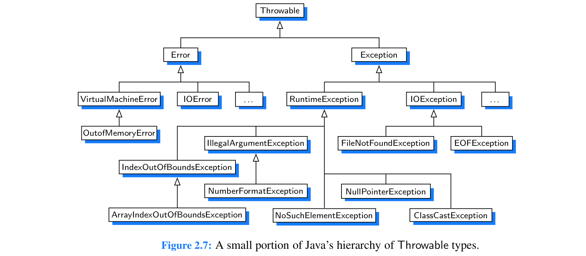

Wednesday September 13th, 2023
Lecture Outline
- Static method (a method that you can call without needed to create an object of that class)
- Try/Catch allows us to deal with errors without crashing the program
- Abstract classes are a superclass (A class that is inherited from) that cannot be instantiated and is used to state or define general characteristics. Ie. you CANNOT create an instance of an abstract class
- The debugger is an incredibly powerful tool in your IDE. You must first place a breakpoint somewhere in your code (double click a line number) and then select the debug option
- Rubber duck debugging can be a helpful solution to identify and fix bugs in your code
Here is a hierarchy of all the different Java exceptions and errors you can catch:

Lecture Recording
- https://youtu.be/CmXgnGBtkxE
Lecture Slides
Code